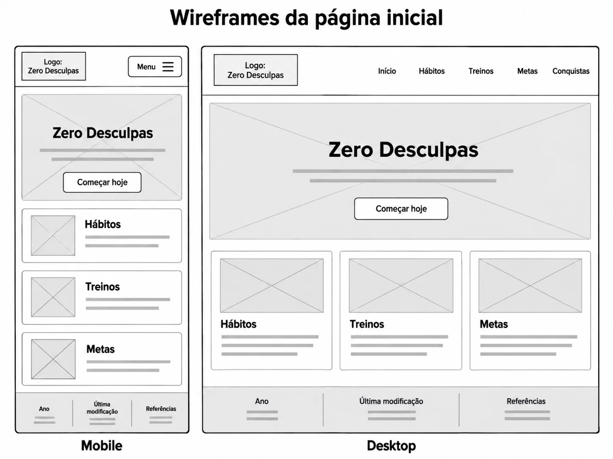

Nome do Site
Zero Desculpas
A escolha do nome foi definida de acordo com o que as pessoas mais costumam fazer: dar desculpas para elas mesmas. Não importa o quão corrida seja a rotina, desculpas, principalmente para você mesmo, não devem ser uma opção. Quando eu era jovem, aprendi com um professor que "desculpas, por mais que sejam válidas, enfraquecem o caráter."
Finalidade do Site
Site criado para ajudar a criar hábitos diários, montar treinos para iniciantes e definir metas, com controle básico de finanças como extra.
Cenários
- Como eu consigo criar um acompanhamento de hábitos diários?
- Como eu faço para montar um treino para iniciantes?
Esquema de Cores
- Fundo
#0f0f0f— fundo da página - Superfície
#1a1a1a— cartões, menu e campos de formulário - Texto
#ffffff— títulos e textos principais - Texto secundário
#9ca3af— rótulos, legendas e descrições - Destaque verde
#10b981— links, botões, item ativo do menu e valores positivos - Alerta vermelho
#ef4444— sequência quebrada e erros de formulário - Laranja
#f97316— sequência de dias
Tipografia
Oswald
Títulos, itens do menu e rótulos em caixa alta.
Inter
Corpo de texto, formulários e botões.
Wireframes
Página inicial: no celular, o menu fica recolhido e os cartões aparecem empilhados; em telas largas, o menu fica em linha e os cartões ficam em três colunas.
